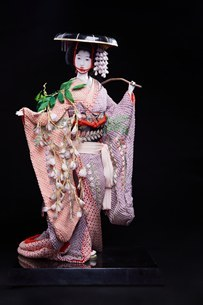

Fuji Musume (Thiếu nữ hoa tử đằng) là một trong những vở múa nổi tiếng và được yêu thích nhất của nghệ thuật Kabuki và Nihon Buyou. Vở diễn ra đời vào năm 1826 trong thời kỳ Edo và được xem là một kiệt tác của nghệ thuật múa truyền thống Nhật Bản.
Nhân vật chính là Thiếu nữ hoa tử đằng, hiện thân của linh hồn hoa tử đằng (Fuji). Trong điệu múa, cô thiếu nữ bày tỏ những cung bậc cảm xúc của tình yêu – từ niềm vui, sự mong nhớ đến nỗi cô đơn và khát vọng được đáp lại. Hình ảnh cành hoa tử đằng luôn theo sát nhân vật là biểu tượng cho sự chung thủy và tình yêu bền chặt.
Búp bê được chế tác với kimono nhiều lớp, họa tiết hoa tử đằng mềm mại, kết hợp chiếc mũ rộng vành cùng cành hoa tử đằng trên vai – những đặc trưng dễ nhận biết của nhân vật Fuji Musume. Từng chi tiết như khuôn mặt, kiểu tóc, trang phục và tư thế múa đều được các nghệ nhân thực hiện tỉ mỉ, tái hiện vẻ đẹp thanh thoát và tinh tế của sân khấu Kabuki.
Không chỉ là một tác phẩm thủ công mỹ nghệ, Fuji Musume còn là biểu tượng của vẻ đẹp, tình yêu và sức sống mùa xuân trong văn hóa Nhật Bản. Tác phẩm góp phần lưu giữ giá trị của nghệ thuật biểu diễn truyền thống và phản ánh sự giao hòa giữa con người với thiên nhiên.
『藤娘』は、歌舞伎と日本舞踊の中でも特に有名で親しまれている演目のひとつです。江戸時代の1826年に初演され、日本の伝統舞踊の傑作とされています。
主人公は藤の花の精の化身である娘です。舞の中で娘は、喜び、恋しさから、寂しさや想いが報われることへの願いまで、恋心のさまざまな移ろいを表現します。常に娘に寄り添う藤の枝は、一途な想いと変わらぬ愛の象徴です。
人形は幾重にも重ねた着物に柔らかな藤の花の文様、つば広の笠、肩にかついだ藤の枝という、藤娘ならではのひと目でわかる特徴を備えています。顔、髪型、衣装、舞の姿勢まで職人が丁寧に仕上げ、歌舞伎の舞台の軽やかで繊細な美しさを再現しています。
藤娘は手工芸品であるだけでなく、日本文化における美しさ、愛、春の生命力の象徴でもあります。伝統芸能の価値を今に伝えるとともに、人と自然の調和を映し出す作品です。